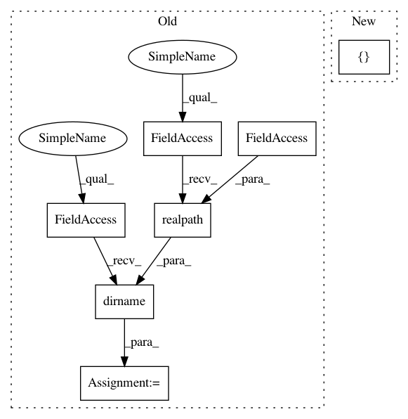

806ab21bced7315212dfc3fac37037978c5bb62f,utils/client.py,,main,#,189
Before Change
default="",
help="If supplied, uses Watson"s TTS")
flags, _ = parser.parse_known_args()
file_dir = os.path.dirname(os.path.realpath(__file__))
goose_window = GooseWindow(file_dir)
watson_api = None
if flags.watson_username and flags.watson_password:
watson_api = WatsonApi(flags.watson_username, flags.watson_password)
After Change
"--mode",
type=str,
default="query",
choices=["retarget", "query"],
help="The mode to run the client in.")
parser.add_argument(
"--qa-endpoint",
In pattern: SUPERPATTERN
Frequency: 3
Non-data size: 7
Instances
Project Name: castorini/honk
Commit Name: 806ab21bced7315212dfc3fac37037978c5bb62f
Time: 2017-09-29
Author: tang.raphael@gmail.com
File Name: utils/client.py
Class Name:
Method Name: main
Project Name: BerkeleyAutomation/gqcnn
Commit Name: c4ef3d26c02514fd3f42af0d2631db0f72eace89
Time: 2018-11-19
Author: jmahler@berkeley.edu
File Name: examples/policy_ros.py
Class Name:
Method Name:
Project Name: castorini/honk
Commit Name: 806ab21bced7315212dfc3fac37037978c5bb62f
Time: 2017-09-29
Author: tang.raphael@gmail.com
File Name: utils/client.py
Class Name:
Method Name: main
Project Name: ANTsX/ANTsPy
Commit Name: 080b07bab9c6f37a11b47333f8717be964368469
Time: 2017-09-26
Author: ncullen.th@dartmouth.edu
File Name: tests/timings.py
Class Name:
Method Name: time_nifti_to_numpy